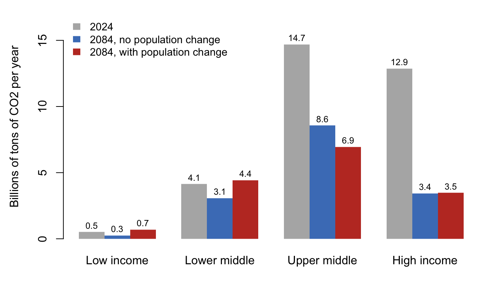

| Income group | Population (R) | Income per person (g) | Carbon per dollar (s) | Emissions: R + g + s | Emissions without population growth: g + s |
|---|---|---|---|---|---|
| Low income | 1.70 | 3.0 | -4.2 | 0.50 | -1.2 |
| Lower middle | 0.61 | 2.5 | -3.0 | 0.11 | -0.5 |
| Upper middle | -0.35 | 2.0 | -2.9 | -1.25 | -0.9 |
| High income | 0.02 | 0.5 | -2.7 | -2.18 | -2.2 |
7 Population and Climate Change
Draft: provenance notes (for review)
Margin tags mark material that is not in the course slides or lab. Added · from readings comes from the assigned readings (Nordhaus, Lam). Added · new is from outside the course materials (my framing, general knowledge, or my own analysis) and needs the closest check. Untagged material follows the 2025 slides (11 and 12) and Lab 5.
Added · new Bridge text written for the chapter split.
Chapter 6 ended with fish and pastures: shared resources that individuals, each acting in their own interest, will overuse. The atmosphere is a commons too, but one shared by the whole planet and by generations not yet born. This chapter looks first at why that makes climate change so hard to solve, and then at how much population growth itself matters for emissions.
7.1 Global warming: a commons the size of the planet
How does global warming compare with overfishing? The similarity is that both are commons that unregulated individuals will destroy. The differences are part of what makes climate change so hard:
- It is global, not local.
- The feedback is delayed. Emissions today warm the climate for decades and centuries.
- We must rely even more on models, of both the climate and the economy.
- The downside could be unimaginably bad.
7.1.1 The science, briefly
Added · from readings This subsection and the next three draw on Nordhaus 2018, pp. 444–459.
Nordhaus summarizes the science in a paragraph. The main source of warming is burning fossil fuels. The carbon dioxide this releases accumulates in the atmosphere and stays there for a long time, and feedbacks in the atmosphere, oceans, and ice sheets amplify the initial warming. Atmospheric CO2 was 280 parts per million in 1750 and more than 413 in 2018. Without forceful steps, it will reach 700–900 parts per million by 2100, leading to global warming of 3–5°C by 2100 and more after that.
Nordhaus’s favorite metaphor is a “climate casino”:
In his own words
“Economic growth is producing unintended but dangerous changes in the climate and earth systems. These changes will lead to unforeseeable consequences. We are rolling the climatic dice, the outcome will produce surprises, and some of them are likely to be perilous. The message is that we need not roll the climatic dice — that there is time to turn around and walk back out of the casino.” (Nordhaus 2018, pp. 444–445)
7.1.2 An economist’s approach
The economist’s approach to global warming has four steps: recognize the tragedy of the commons; agree, within and between nations, to reduce emissions; choose among methods such as carbon taxes and subsidies; and model the costs and benefits of different approaches to find the path that is best for human welfare. In lecture we watch parts of Nordhaus’s Nobel lecture: the introduction and overview, strategies and costs, his DICE model, and the carbon tax.
Three strategies. Nordhaus considers three ways to slow climate change. Plan C, “geoengineering,” would make the earth more reflective, for example with particles in the stratosphere. He compares it to “salvage therapy,” a dangerous treatment for when all else has failed: “no responsible country should undertake geoengineering as the first line of defense against global warming.” Plan B, removing carbon from the air, is “running combustion in reverse,” but no technology can yet do it at scale at a reasonable cost. That leaves Plan A, abatement, which means burning less carbon. Estimates put its cost at a bit above 1 percent of world output for a 50 percent cut in emissions, and about 3.5 percent for eliminating emissions entirely.
Damages. Estimating the damage from warming is harder than estimating the cost of preventing it. Highly managed sectors of rich economies can adapt for a while. Unmanaged systems cannot: rain-fed agriculture, snow packs, coastal communities, natural ecosystems, and especially low-income and tropical regions. Scientists also worry about “tipping points,” such as the melting of the Greenland and West Antarctic ice sheets or changes in the Gulf Stream, which are hard to reverse once triggered. In Nordhaus’s DICE model, damages are about 2 percent of output at 3°C of warming and 8 percent at 6°C. Other estimates, he notes, “are all over the map.”
The optimal path. Too much warming would be terrible. So would too much limitation on economic growth. The optimum has some warming and some limitation on growth, and finding it means putting costs and benefits in a common metric. Nordhaus defends this against the alternative of fixed temperature targets. If meeting a 1.5°C target “would require deep reductions in living standards in poor nations, then the policy would be the equivalent of burning down the village to save it.” His most controversial result is that the cost-benefit optimum allows warming of more than 3°C by 2100, well above international targets.
The social cost of carbon. One by-product of the model is an estimate of the damage done by one more ton of CO2, called the social cost of carbon. In an optimal policy, that is what a carbon tax should be: about $36 per ton in Nordhaus’s standard model, and much more for strict temperature targets. The estimate depends heavily on the discount rate, meaning how much weight we put on the welfare of future generations compared with our own. Nordhaus calls discounting “perhaps the most important conceptual issue facing current climate policy.”
7.1.3 The big challenge: coordination
Lecture sums up the economist’s view in two points. The “price” of slowing climate change is not terribly high, but doing it is a problem because of coordination. The challenge is the one Hardin laid out: how do we mutually agree to mutually coerce ourselves?
Nordhaus’s name for the obstacle is free-riding. The actual global carbon price, he reports, is at most a tenth of even his modest $36 estimate. Why?
In his own words
“No single country has an incentive to cut its emissions sharply. Suppose that when country A spends $100 on abatement, global damages decline by $200. However, country A might get only $20 of the benefits, so it would tend to decline the responsibility.” (Nordhaus 2018, p. 457)
This is Hardin’s herdsman again. Country A captures nearly all the benefit of burning carbon but only a small fraction of the damage. Nordhaus adds a second layer, generational free-riding: the current generation can push the costs onto future generations, because “most of the benefits of costly emissions reductions today would accrue many decades in the future.”
The record of international agreements bears this out. Under the Kyoto Protocol of 1997, high-income countries agreed to limit their emissions. The United States withdrew early, and no middle-income or developing countries joined. The protocol “died a quiet death, mourned by few, on December 31, 2012.” The Paris Accord of 2015 asks each country for voluntary “nationally determined contributions,” with no penalty for missing them. Nordhaus’s verdict: “The world is therefore just where it stood in 1994, recognizing the dangers of climate change without effective policies to stop it.” He finds no break in the long-run decline of the world’s carbon intensity (emissions per dollar of output, outside China) after any of the landmark agreements.
Climate clubs. Nordhaus’s proposed solution is a “climate club.” Member countries would agree on a minimum carbon price, and, crucially, they would penalize non-members, for example with a uniform tariff on their exports to club members. The penalty is what turns a voluntary agreement into mutual coercion. It changes each country’s self-interested calculation, so that joining becomes the better choice.
7.1.4 Dismal conclusions?
If there are no “mutual agreements for mutual coercion,” what can save us? Lecture suggests three possibilities:
- Self-interest. Technological change may make low-emission energy cheaper on its own.
- The prospect of future agreements may encourage investment now. (Why would a government want access to lithium if it didn’t expect more electric cars?)
- Going beyond abatement, to carbon removal and climate engineering.
Added · from readings Nordhaus 2018, pp. 464–465.
Nordhaus ends his lecture with four steps: understanding the gravity of the problem, raising the price of carbon, coordinating action globally (through a club), and developing low-carbon technologies. “Knowledge, proper pricing, coordinated action, and new technologies — these are the steps that are necessary if we are to tame this Colossus that threatens our world.”
7.2 How much does population matter for emissions?
So far, population has been in the background. Now we ask directly: how much does population growth contribute to climate change? Consider a claim to discuss: A proportional increase in population will cause a proportional increase in global warming. For example, if warming along some population trajectory would be 2.0 degrees, a 10 percent larger population would lead to 2.2 degrees. True or false?
7.2.1 Decomposition versus model
The economist David Lam approaches this question with a decomposition, an approach for which lecture tips its hat to Paul Ehrlich and others.
Added · new The name “IPAT” for Ehrlich’s version is from general knowledge, not your slides.
Start with an example that has nothing to do with climate. Total output is output per person times the number of people: \(Y = y \times N\). Is this just an identity, an algebraic way of factoring a number? Or is it a model of how the world works? As an identity, it is always true. But if we use it to predict what happens when one factor changes, we are assuming that the other factors stay the same, ceteris paribus. If population itself depends on income, as in Malthus, then changing income also changes \(N\). To use the decomposition as a model, we need to know whether the factors depend on each other. (Ehrlich’s version of this idea, “IPAT,” writes environmental Impact as Population × Affluence × Technology.)
For carbon emissions, the decomposition is
\[ \text{CO}_2 = N \times \frac{\text{dollars of output}}{\text{person}} \times \frac{\text{CO}_2}{\text{dollar of output}}, \qquad\text{or}\qquad C = N \times y \times c. \]
Nordhaus’s DICE model includes feedbacks among these factors, such as how the economy is hurt by climate damage. If we ignore those feedbacks and hold everything else constant, the decomposition tells us what would happen if we changed one factor, such as population.
7.2.2 Lam’s approach
Lam divides the world into four groups of countries by income: low-income (LIC), lower-middle-income (LMIC), upper-middle-income (UMIC), and high-income (HIC). For each group \(i\),
\[ C_i = N_i \times y_i \times c_i, \]
and world emissions are the sum over the groups. To project to 2084, 60 years ahead, Lam assumes each factor changes at a constant exponential rate: population at rate \(R\), income per person at rate \(g\), and carbon per dollar at rate \(s\). Because the factors multiply, their growth rates add. Emissions in each group grow at the rate \(R + g + s\).
Three things stand out. Population growth is concentrated in the poorest countries, and population actually falls in the upper-middle-income group. Income grows fastest in poorer countries. And carbon intensity falls everywhere, fastest in low-income countries, which may “leapfrog” directly to cleaner technologies.
Added · from readings The UN figures and the per-capita comparison are from Lam 2025.
Just as important is where the extra people will be. The UN projects that world population will peak at 10.3 billion in 2084, 2.1 billion more than in 2024. In Lam’s words, “coming decades will see a large shift in population from countries with high consumption and emissions to countries with low consumption and emissions.” Per capita CO2 emissions in high-income countries are about 35 times those in low-income countries.
7.2.3 Lam’s results
Figure 7.1 reproduces Lam’s calculation with the numbers from Lab 5. It compares emissions in 2024 with two projections for 2084: one with the UN’s projected population change, and a counterfactual with each group’s population frozen at its 2024 level.
Show the R code
mat <- rbind(`2024` = lam$C_2024,
`2084, no population change` = lam$C_2084_nopop,
`2084, with population change` = lam$C_2084) / 1e9
colnames(mat) <- c("Low income", "Lower middle", "Upper middle", "High income")
op <- par(mar = c(4, 4.5, 1, 1))
bp <- barplot(mat, beside = TRUE, col = c("grey70", "#4a7fc1", "#c0392b"),
border = NA, ylim = c(0, 17),
ylab = "Billions of tons of CO2 per year")
text(bp, mat + 0.5, sprintf("%.1f", mat), cex = 0.75)
legend("topleft", rownames(mat), fill = c("grey70", "#4a7fc1", "#c0392b"),
border = NA, bty = "n", cex = 0.9)
par(op)
World emissions fall by about 52 percent between 2024 and 2084 with population change, and by about 52 percent without it. The two projections are almost identical.
How can two billion more people make almost no difference? Look at the groups. Population growth raises 2084 emissions in the low-income group by about 0.4 billion tons and in the lower-middle-income group by about 1.4 billion tons. But population decline in the upper-middle-income group lowers its emissions by about 1.6 billion tons. The effects cancel. And the big declines from 2024 happen in the two richer groups, whether or not population changes, because their emissions per dollar fall fast and their populations are not growing.
Added · from readings Lam 2025.
Lam’s own summary: “The surprising bottom line is that the net effect of projected population changes over the next 60 years is an almost neutral impact on CO2 emissions, despite the addition of over 2 billion people.” He adds two qualifications. First, population growth does raise emissions in the poorest countries. In low-income countries it turns a 1.1 percent annual decline in emissions into a 0.4 percent annual increase. If population in low- and lower-middle-income countries did not grow at all, global emissions in 2084 would be 15 percent lower than projected. Second, carbon is not the whole story. Population growth matters much more for food and water. With population growth, world food consumption rises by 45 percent by 2084, compared with 15 percent from income growth alone, and water use by 21 percent compared with almost no increase. Lam also draws a broader lesson. Food and non-renewable resources respond well to market signals, while water and greenhouse gases are “sectors in which market signals are less effective”: exactly the commons problems of this chapter and Chapter 6.
7.2.4 What the answer depends on
So what is the effect of population growth on climate change? The answer depends on:
- how much population changes;
- who grows: high emitters or low emitters. Population growth in a high emitter such as Russia would have a big effect, and growth in a low emitter such as Ghana a small one;
- how emissions per person change over time.
Lam’s analysis shows that projected population growth has little effect on emissions, because of where that growth is expected to happen and because of his assumptions about decarbonization and economic growth. All of this is “all else equal.” The lab gives you a chance to see how robust the finding is when the assumptions change. The lesson, perhaps, is to worry more about how to reduce emissions from economic activity, and less about how to slow population growth.
In the lab
In Lab 5 you reproduce Lam’s calculation, including the counterfactual with no population change, and then change his assumptions to see whether the conclusion holds. You also use the harvest “app” to explore the relationship between the harvest rate and the sustainable yield.
7.3 Key ideas
- Climate change is a global commons. Nordhaus estimates that slowing it is not very expensive, but free-riding, by countries and by generations, has defeated voluntary agreements. He proposes a climate club that penalizes non-members.
- Emissions can be decomposed as \(C = N \times y \times c\), so their growth rate is \(R + g + s\). A decomposition is only a model if we can hold the other factors constant.
- Lam finds that 2 billion more people will barely change global CO2 emissions, because population grows where emissions per person are low and falls where they are high.
7.4 Check your understanding
Added · new Question 3 comes from your slides (12-12, 12-21). The rest are new and avoid the Lab 5 graded questions.
Free-riding by the numbers. In Nordhaus’s example, country A spends $100 on abatement, reducing global damages by $200, of which A receives $20. What share of the global benefit would A need to receive before abatement paid off for A alone? How does a climate club’s tariff change A’s calculation?
Generations as a commons. Explain in a sentence or two why a higher discount rate leads to a lower social cost of carbon, and why Nordhaus calls this “generational free-riding.”
Proportional or not? Return to the true-or-false claim that a 10 percent larger population means 10 percent more warming. Using Lam’s decomposition, describe one situation in which the claim would be roughly true and one in which it would be badly wrong.
Decomposition as a model. Lam treats population, income per person, and carbon intensity as independent of one another. Give one reason why population growth might change income per person, and one reason why it might change carbon intensity. Which way would each push Lam’s conclusion?
Halving carbon intensity. Suppose a country’s carbon intensity fell by half over 30 years. What constant exponential rate of decline is that? (Hint: use the exponential model from Chapter 1.)
7.5 Further reading
- Lam, David. 2025. “How Will Two Billion More People Affect Food, Water, Energy, and CO2?” N-IUSSP, January 20. A three-page summary of a longer research article (Lam 2024, Population and Development Review). As you read: Why does population growth matter much more for food and water than for CO2?
- Nordhaus, William D. 2018. “Climate Change: The Ultimate Challenge for Economics.” Nobel Prize lecture, written version. As you read: What are Plans A, B, and C? What is the social cost of carbon? Why have the Kyoto Protocol and the Paris Accord done so little, and how would a climate club differ? The video of the lecture is also assigned.
- Dyson, Tim. 2005. “On Development, Demography and Climate Change: The End of the World as We Know It?” Population and Environment 27(2): 117–149. Optional; replaced by Lam (2025). An older and much more pessimistic view. Dyson makes five arguments: economic development since about 1800 has run on fossil fuels and will keep doing so; momentum in economic and demographic processes makes a large rise in atmospheric CO2 inevitable this century; warming will be faster than anything in human history, with a fair chance of abrupt change; bad outcomes are at least as likely as manageable ones; and, as with HIV/AIDS, denial, avoidance, and recrimination mean behavior won’t change much until the damage is plain. As you read: In his Table 3, population growth alone raises emissions by 28 percent to 2050, against 49 percent population growth. Why less? Why does he argue that economic growth in poor countries matters far more than population growth? Compare his decomposition with Lam’s. Twenty years on, which of his predictions look right?